CODING AGENTS AS PIXEL WORLD MODELS
traex/GPT-6.1-Sol · 0110
点击播放 · 原生 RGB 像素
逐轮保存的候选
回放视频、检查图与代码变化。
每份候选均可单独播放。实际图片检查记录在下方工具轨迹中。
候选 01播放与检查图
点击播放 · 原生 RGB 像素
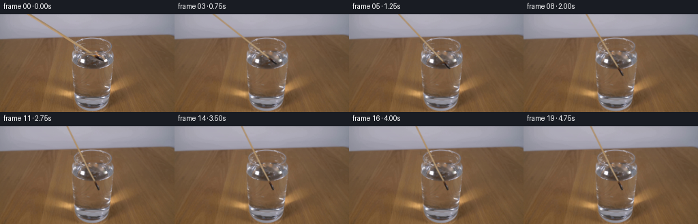
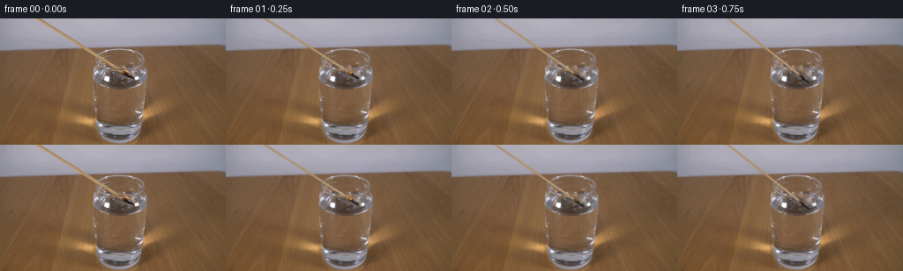
展开代码变化
--- 上一保存版本
+++ 本次保存版本
@@ -0,0 +1,176 @@
+from pathlib import Path
+import math
+import numpy as np
+from PIL import Image, ImageDraw
+import cv2
+from scipy.special import ndtr
+from scipy.ndimage import gaussian_filter1d
+import artifact_io
+
+ROOT=Path(__file__).resolve().parent
+W,H=256,144
+S=4
+original=np.array(Image.open(ROOT/'first_frame.png').convert('RGB'))
+
+def background_plate():
+ mask=np.zeros((H*S,W*S),np.uint8)
+ def pt(x,y):return (round(x*S),round(y*S))
+ cv2.line(mask,pt(40,-1),pt(138.7,59.5),255,round(4.7*S),cv2.LINE_AA)
+ cv2.line(mask,pt(137,58.3),pt(151.5,67.5),255,round(5.8*S),cv2.LINE_AA)
+ cv2.ellipse(mask,pt(143,61),(4*S,4*S),25,0,360,255,-1)
+ mask=cv2.resize(mask,(W,H),interpolation=cv2.INTER_AREA)
+ b=cv2.inpaint(original,(mask>10).astype(np.uint8)*255,4,cv2.INPAINT_NS)
+ for y in range(44):
+ xs=np.where(mask[y]>0)[0]
+ if len(xs):
+ l,r=xs.min(),xs.max();a=max(0,l-2);z=min(W-1,r+2)
+ for x in xs:
+ v=(x-a)/(z-a)
+ b[y,x]=original[y,a]*(1-v)+original[y,z]*v
+ # Recover the otherwise hidden short section of the circular glass rim
+ # using the opposite side of this same glass.
+ for y in range(34,58):
+ for x in range(104,134):
+ if mask[y,x]>0:
+ a=min(1,mask[y,x]/180)
+ b[y,x]=b[y,x]*(1-a)+original[y,271-x]*a
+ return b
+
+base=background_plate()
+yy,xx=np.mgrid[0:H*S,0:W*S].astype(np.float32)
+X=(xx+.5)/S-.5;Y=(yy+.5)/S-.5
+back_hi=cv2.resize(base,(W*S,H*S),interpolation=cv2.INTER_CUBIC).astype(np.float32)
+a0=math.atan2(67.0,107.7)
+e0=np.array([math.cos(a0),math.sin(a0)])
+n0=np.array([-e0[1],e0[0]])
+tip0=np.array([150.2,67.0])
+# Surface at the entry point in the obliquely viewed glass.
+water_y=65.1
+
+def rod_layer(t):
+ # A continuous lowering accompanied by a small steepening of the long match.
+ duration=2.6
+ p=min(t/duration,1.0)
+ smooth=p*p*(3-2*p)
+ angle=a0+(math.radians(64)-a0)*smooth
+ tx=150.2-6.4*smooth
+ ty=67+26*smooth
+ e=np.array([math.cos(angle),math.sin(angle)])
+ n=np.array([-e[1],e[0]])
+ # Weak refraction: a submerged shaft appears a little less steep.
+ bend=np.clip((Y-water_y)/20,0,1)*1.1*smooth
+ dx=X-tx-bend;dy=Y-ty
+ u=-(dx*e[0]+dy*e[1])
+ v=dx*n[0]+dy*n[1]
+ width=1.16 + .42/(1+np.exp(np.clip((u-13.2)*2,-60,60)))
+ # Irregular, rounded charcoal on the burnt end.
+ width+=.08*np.sin(u*2.5)*np.exp(-((u-6)/7)**4)
+ cross=ndtr((width-np.abs(v))/.38)
+ end=ndtr((u+.35)/.43)
+ alpha=cross*end
+ sx=(tip0[0]-u*e0[0]+v*n0[0]).astype(np.float32)
+ sy=(tip0[1]-u*e0[1]+v*n0[1]).astype(np.float32)
+ sampled=cv2.remap(original.astype(np.float32),sx,sy,cv2.INTER_CUBIC,borderMode=cv2.BORDER_REPLICATE)
+ # Unmix the soft-focus contour from its original background.
+ oldbg=cv2.remap(base.astype(np.float32),sx,sy,cv2.INTER_CUBIC,borderMode=cv2.BORDER_REPLICATE)
+ source_alpha=ndtr((width-np.abs(v))/.43)*ndtr((u+.35)/.43)
+ actual=np.clip((sampled-oldbg*(1-source_alpha[...,None]))/np.maximum(source_alpha[...,None],.20),0,255)
+ # Rebuild the wooden shaft with longitudinal grain, avoiding baked-in glass reflections.
+ ux=np.arange(0,155,dtype=np.float32)
+ cx=(tip0[0]-ux*e0[0])[None,:].astype(np.float32)
+ cy=(tip0[1]-ux*e0[1])[None,:].astype(np.float32)
+ center=cv2.remap(original.astype(np.float32),cx,cy,cv2.INTER_CUBIC,borderMode=cv2.BORDER_REPLICATE)[0]
+ # The rim occludes the shaft in the reference at about 22px from the tip.
+ center[14:31]=np.linspace(center[31]*.99,center[31],17)
+ center[126:]=center[120:126].mean(axis=0)
+ center=gaussian_filter1d(center,1.1,axis=0)
+ ui=np.clip(u,0,154)
+ wood=np.stack([np.interp(ui,ux,center[:,k]) for k in range(3)],axis=-1)
+ wood+=(.8*np.sin(u*1.6)+.55*np.sin(u*.57+v*3))[...,None]
+ wood+=(4.0*np.exp(-((v+.45)/.44)**2)-8*(v/1.6)**2)[...,None]
+ blend=np.clip((u-12.7)/2.2,0,1)
+ col=actual*(1-blend[...,None])+wood*blend[...,None]
+ # When wetted, the embers cease emitting light and the blackened end darkens.
+ quenched=np.clip((t-.25)/.5,0,1)
+ ember=(np.clip((u-8)/5,0,1)*np.clip((16-u)/4,0,1))
+ ember*=quenched
+ dark=np.zeros_like(col)+np.array([44,36,27])
+ col=col*(1-.65*ember[...,None])+dark*(.65*ember[...,None])
+ # The glass/water preserves a faint veiling reflection on the immersed match.
+ submerged=np.clip((Y-water_y)/3,0,1)*smooth
+ col=col*(1-.13*submerged[...,None])+back_hi*(.13*submerged[...,None])
+ return np.clip(col,0,255),alpha,tx,ty,angle,smooth
+
+def wave_distort(t):
+ # Small circular ripples damp out without disturbing the glass or camera.
+ impact=.52
+ dt=t-impact
+ if dt<=0 or dt>2.3:return back_hi.copy()
+ cx,cy=145.8,65.2
+ q=np.sqrt(((X-cx))**2+((Y-cy)/.41)**2)
+ env=np.exp(-dt*1.45)*np.exp(-((q-(2+dt*11))/6)**2)
+ phase=q*1.3-dt*12
+ disp=.30*np.sin(phase)*env
+ inside=((X-135.6)/28)**2+((Y-66.5)/12.1)**2
+ protect=np.clip((1-inside)*7,0,1)
+ mx=(xx+disp*protect*S).astype(np.float32)
+ my=(yy+disp*.50*protect*S).astype(np.float32)
+ return cv2.remap(back_hi,mx,my,cv2.INTER_LINEAR,borderMode=cv2.BORDER_REFLECT)
+
+def flame(out,t,tx,ty,angle):
+ # The starting small flame flickers briefly and dies immediately on immersion.
+ life=max(0,1-t/.75)
+ if life<=0:return out
+ e=np.array([math.cos(angle),math.sin(angle)])
+ fx,fy=np.array([tx,ty])-e*10.5
+ fh=(4.5+1.0*math.sin(t*22))*life
+ # Gaussian amber glow, subtle on the scientific setup.
+ glow=np.exp(-((X-fx)**2/10+(Y-(fy-1.5))**2/11))*life*.16
+ out=out*(1-glow[...,None])+np.array([241,159,55])*glow[...,None]
+ l=Image.new('RGBA',(W*S,H*S));d=ImageDraw.Draw(l)
+ def P(x,y):return (round((x+.5)*S),round((y+.5)*S))
+ wobble=.5*math.sin(t*25)
+ pts=[P(fx-1.4*life,fy+.7),P(fx-1.9*life,fy-1.0*life),P(fx+wobble,fy-fh),P(fx+1.5*life,fy-1.9*life),P(fx+1.2*life,fy+.7)]
+ d.polygon(pts,fill=(254,160,35,round(230*life)))
+ d.ellipse([P(fx-.65*life,fy-2.1*life),P(fx+.65*life,fy+.5)],fill=(255,231,158,round(245*life)))
+ a=np.array(l).astype(np.float32);a=cv2.GaussianBlur(a,(0,0),S*.21)
+ return out*(1-a[...,3:]/255)+a[...,:3]*a[...,3:]/255
+
+def smoke(out,t):
+ # A soft, tiny curl of steam/smoke immediately above the extinguished match.
+ dt=t-.5
+ if dt<=0 or dt>1.7:return out
+ op=.10*math.sin(min(dt/1.7,1)*math.pi)
+ ribbon=np.zeros_like(X)
+ for j in range(30):
+ s=j/29
+ y=61-dt*8-s*8
+ x=143-2.5*s+1.5*math.sin(s*6-dt*3)
+ rad=.5+1.2*s
+ ribbon+=np.exp(-((X-x)**2+(Y-y)**2)/(2*rad*rad))*(1-s)*op/10
+ a=np.clip(ribbon,0,.065)
+ return out*(1-a[...,None])+np.array([183,186,185])*a[...,None]
+
+def glass_overlay(out,alpha):
+ # Preserve front lip between the camera and the lowered match.
+ r=np.sqrt(((X-136)/29)**2+((Y-46.4)/12.2)**2)
+ mask=np.exp(-((r-1)/.047)**2)*(Y>46.5)*np.clip(alpha,.0,1)*.69
+ return out*(1-mask[...,None])+back_hi*mask[...,None]
+
+def make_frames():
+ result=[original.copy()]
+ for k in range(1,20):
+ t=k/4
+ layer,alpha,tx,ty,angle,p=rod_layer(t)
+ out=wave_distort(t)
+ out=out*(1-alpha[...,None])+layer*alpha[...,None]
+ out=glass_overlay(out,alpha)
+ out=flame(out,t,tx,ty,angle)
+ out=smoke(out,t)
+ image=cv2.resize(np.clip(out,0,255),(W,H),interpolation=cv2.INTER_AREA)
+ result.append(np.clip(np.rint(image),0,255).astype(np.uint8))
+ return np.stack(result)
+
+if __name__=='__main__':
+ frames=make_frames()
+ artifact_io.save(frames,ROOT)
候选 02播放与检查图
点击播放 · 原生 RGB 像素
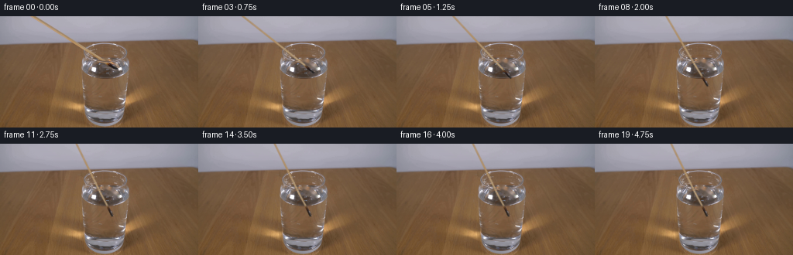
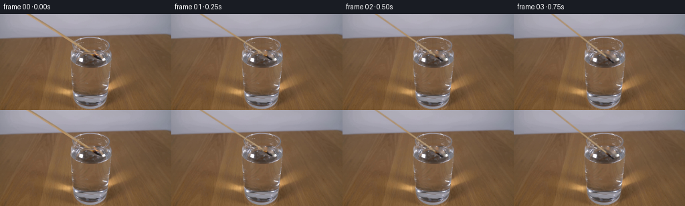
展开代码变化
--- 上一保存版本
+++ 本次保存版本
@@ -151,6 +151,22 @@
a=np.clip(ribbon,0,.065)
return out*(1-a[...,None])+np.array([183,186,185])*a[...,None]
+def water_detail(out,t):
+ dt=t-.45
+ if dt<=0 or dt>2.8:
+ return out
+ # Fine expanding meniscus waves, elliptical in the fixed perspective.
+ q=np.sqrt((X-145.5)**2+((Y-65.9)/.39)**2)
+ inside=((X-135.6)/27.6)**2+((Y-66.5)/11.7)**2
+ fade=np.clip((1-inside)*5,0,1)
+ radius=2+dt*9.0
+ strength=.085*math.exp(-1.5*dt)
+ a=np.exp(-((q-radius)/.38)**2)*strength*fade
+ shade=np.exp(-((q-(radius+.7))/.48)**2)*strength*.65*fade
+ out=out*(1-a[...,None])+np.array([179,185,181])*a[...,None]
+ out=out*(1-shade[...,None])+np.array([65,58,47])*shade[...,None]
+ return out
+
def glass_overlay(out,alpha):
# Preserve front lip between the camera and the lowered match.
r=np.sqrt(((X-136)/29)**2+((Y-46.4)/12.2)**2)
@@ -163,11 +179,14 @@
t=k/4
layer,alpha,tx,ty,angle,p=rod_layer(t)
out=wave_distort(t)
+ out=water_detail(out,t)
out=out*(1-alpha[...,None])+layer*alpha[...,None]
out=glass_overlay(out,alpha)
out=flame(out,t,tx,ty,angle)
out=smoke(out,t)
- image=cv2.resize(np.clip(out,0,255),(W,H),interpolation=cv2.INTER_AREA)
+ # Preserve every unaffected background pixel at its input resolution.
+ delta=cv2.resize(out-back_hi,(W,H),interpolation=cv2.INTER_AREA)
+ image=base.astype(np.float32)+delta
result.append(np.clip(np.rint(image),0,255).astype(np.uint8))
return np.stack(result)
可观测工具轨迹
实际执行的命令与返回图片。
命令 1exit 0
/bin/bash -lc 'ls -la && cat prompt.txt && cat GENERATION_RULES.md'
命令 2exit 0
/bin/bash -lc "cat artifact_io.py && python - <<'PY'
from PIL import Image
im=Image.open('first_frame.png'); print(im.size); im.resize((1024,576)).save('.tmp/zoom.png')
PY"命令 3exit 0
/bin/bash -lc "python - <<'PY'
import cv2,numpy as np
from PIL import Image
im=Image.open('first_frame.png'); im.crop((95,30,170,90)).resize((900,720)).save('.tmp/detail.png')
print('cv2',cv2.__version__)
PY"命令 4exit 0
/bin/bash -lc "cat > .tmp/test_plate.py <<'PY'
import cv2,numpy as np
from PIL import Image
im=np.array(Image.open('first_frame.png'))
m=np.zeros(im.shape[:2],np.uint8)
cv2.line(m,(43,-2),(139,59),255,5,cv2.LINE_AA)
cv2.line(m,(137,59),(151,67),255,7,cv2.LINE_AA)
cv2.ellipse(m,(145,61),(5,4),25,0,360,255,-1)
# background remove separately
b=cv2.inpaint(im,m,3,cv2.INPAINT_TELEA)
Image.fromarray(b).save('.tmp/clean.png')
Image.fromarray(b).resize((1024,576)).save('.tmp/cleanzoom.png')
Image.fromarray(m).save('.tmp/mask.png')
PY
python .tmp/test_plate.py"命令 5exit 0
/bin/bash -lc "cat > .tmp/plate2.py <<'PY'
import cv2,numpy as np
from PIL import Image
im=np.array(Image.open('first_frame.png')); h,w=im.shape[:2]
S=4
m=np.zeros((h*S,w*S),np.uint8)
cv2.line(m,(int(40*S),-1*S),(int(138.7*S),int(59.5*S)),255,int(4.7*S),cv2.LINE_AA)
cv2.line(m,(int(137*S),int(58.3*S)),(int(151.5*S),int(67.5*S)),255,int(5.8*S),cv2.LINE_AA)
cv2.ellipse(m,(143*S,61*S),(4*S,4*S),25,0,360,255,-1)
m=cv2.resize(m,(w,h),interpolation=cv2.INTER_AREA)
b=cv2.inpaint(im,(m>10).astype(np.uint8)*255,2,cv2.INPAINT_TELEA)
# keep the table-wall horizon unbroken by interpolating along scanline, not across it
for y in range(0,44):
xs=np.where(m[y]>0)[0]
if len(xs):
l,r=xs.min(),xs.max(); a=max(0,l-1);z=min(w-1,r+1)
for x in xs:
u=(x-a)/(z-a)
b[y,x]=(im[y,a]*(1-u)+im[y,z]*u).astype(np.uint8)
Image.fromarray(b).save('.tmp/clean2.png');Image.fromarray(b).resize((1024,576)).save('.tmp/clean2zoom.png')
Image.fromarray(m).save('.tmp/mask2.png')
PY
python .tmp/plate2.py"命令 6exit 0
/bin/bash -lc "python - <<'PY'
from PIL import Image,ImageDraw
im=Image.open('first_frame.png').resize((1536,864)); d=ImageDraw.Draw(im)
for x in range(100,166,5):
d.line((x*6,30*6,x*6,85*6),fill=(255,0,0),width=1);d.text((x*6,27*6),str(x),fill=(255,255,255))
for y in range(30,86,5):
d.line((100*6,y*6,165*6,y*6),fill=(255,0,0),width=1);d.text((96*6,y*6),str(y),fill=(255,255,255))
im.crop((570,150,1010,525)).save('.tmp/grid.png')
PY"命令 7exit 0
/bin/bash -lc "cat > .tmp/testplates.py <<'PY'
exec(open('.tmp/plate2.py').read().split(\"Image.fromarray(b)\")[0])
for method,name in [(cv2.INPAINT_TELEA,'telea'),(cv2.INPAINT_NS,'ns')]:
b=cv2.inpaint(im,(m>10).astype(np.uint8)*255,4,method)
for y in range(0,44):
xs=np.where(m[y]>0)[0]
if len(xs):
l,r=xs.min(),xs.max(); a=max(0,l-2);z=min(w-1,r+2)
for x in xs:
u=(x-a)/(z-a);b[y,x]=(im[y,a]*(1-u)+im[y,z]*u).astype(np.uint8)
for y in range(34,58):
for x in range(104,134):
if m[y,x]>0:
weight=min(1,m[y,x]/180)
b[y,x]=np.clip(b[y,x]*(1-weight)+im[y,271-x]*weight,0,255)
Image.fromarray(b).resize((1024,576)).save('.tmp/plate_'+name+'.png')
Image.fromarray(b).save('.tmp/base_'+name+'.png')
PY
python .tmp/testplates.py"命令 8exit 0
/bin/bash -lc "cat > generate.py <<'PY'
from pathlib import Path
import math
import numpy as np
from PIL import Image, ImageDraw
import cv2
from scipy.special import ndtr
from scipy.ndimage import gaussian_filter1d
import artifact_io
ROOT=Path(__file__).resolve().parent
W,H=256,144
S=4
original=np.array(Image.open(ROOT/'first_frame.png').convert('RGB'))
def background_plate():
mask=np.zeros((H*S,W*S),np.uint8)
def pt(x,y):return (round(x*S),round(y*S))
cv2.line(mask,pt(40,-1),pt(138.7,59.5),255,round(4.7*S),cv2.LINE_AA)
cv2.line(mask,pt(137,58.3),pt(151.5,67.5),255,round(5.8*S),cv2.LINE_AA)
cv2.ellipse(mask,pt(143,61),(4*S,4*S),25,0,360,255,-1)
mask=cv2.resize(mask,(W,H),interpolation=cv2.INTER_AREA)
b=cv2.inpaint(original,(mask>10).astype(np.uint8)*255,4,cv2.INPAINT_NS)
for y in range(44):
xs=np.where(mask[y]>0)[0]
if len(xs):
l,r=xs.min(),xs.max();a=max(0,l-2);z=min(W-1,r+2)
for x in xs:
v=(x-a)/(z-a)
b[y,x]=original[y,a]*(1-v)+original[y,z]*v
# Recover the otherwise hidden short section of the circular glass rim
# using the opposite side of this same glass.
for y in range(34,58):
for x in range(104,134):
if mask[y,x]>0:
a=min(1,mask[y,x]/180)
b[y,x]=b[y,x]*(1-a)+original[y,271-x]*a
return b
base=background_plate()
yy,xx=np.mgrid[0:H*S,0:W*S].astype(np.float32)
X=(xx+.5)/S-.5;Y=(yy+.5)/S-.5
back_hi=cv2.resize(base,(W*S,H*S),interpolation=cv2.INTER_CUBIC).astype(np.float32)
a0=math.atan2(67.0,107.7)
e0=np.array([math.cos(a0),math.sin(a0)])
n0=np.array([-e0[1],e0[0]])
tip0=np.array([150.2,67.0])
# Surface at the entry point in the obliquely viewed glass.
water_y=65.1
def rod_layer(t):
# A continuous lowering accompanied by a small steepening of the long match.
duration=2.6
p=min(t/duration,1.0)
smooth=p*p*(3-2*p)
angle=a0+(math.radians(64)-a0)*smooth
tx=150.2-6.4*smooth
ty=67+26*smooth
e=np.array([math.cos(angle),math.sin(angle)])
n=np.array([-e[1],e[0]])
# Weak refraction: a submerged shaft appears a little less steep.
bend=np.clip((Y-water_y)/20,0,1)*1.1*smooth
dx=X-tx-bend;dy=Y-ty
u=-(dx*e[0]+dy*e[1])
v=dx*n[0]+dy*n[1]
width=1.16 + .42/(1+np.exp(np.clip((u-13.2)*2,-60,60)))
# Irregular, rounded charcoal on the burnt end.
width+=.08*np.sin(u*2.5)*np.exp(-((u-6)/7)**4)
cross=ndtr((width-np.abs(v))/.38)
end=ndtr((u+.35)/.43)
alpha=cross*end
sx=(tip0[0]-u*e0[0]+v*n0[0]).astype(np.float32)
sy=(tip0[1]-u*e0[1]+v*n0[1]).astype(np.float32)
sampled=cv2.remap(original.astype(np.float32),sx,sy,cv2.INTER_CUBIC,borderMode=cv2.BORDER_REPLICATE)
# Unmix the soft-focus contour from its original background.
oldbg=cv2.remap(base.astype(np.float32),sx,sy,cv2.INTER_CUBIC,borderMode=cv2.BORDER_REPLICATE)
source_alpha=ndtr((width-np.abs(v))/.43)*ndtr((u+.35)/.43)
actual=np.clip((sampled-oldbg*(1-source_alpha[...,None]))/np.maximum(source_alpha[...,None],.20),0,255)
# Rebuild the wooden shaft with longitudinal grain, avoiding baked-in glass reflections.
ux=np.arange(0,155,dtype=np.float32)
cx=(tip0[0]-ux*e0[0])[None,:].astype(np.float32)
cy=(tip0[1]-ux*e0[1])[None,:].astype(np.float32)
center=cv2.remap(original.astype(np.float32),cx,cy,cv2.INTER_CUBIC,borderMode=cv2.BORDER_REPLICATE)[0]
# The rim occludes the shaft in the reference at about 22px from the tip.
center[14:31]=np.linspace(center[31]*.99,center[31],17)
center[126:]=center[120:126].mean(axis=0)
center=gaussian_filter1d(center,1.1,axis=0)
ui=np.clip(u,0,154)
wood=np.stack([np.interp(ui,ux,center[:,k]) for k in range(3)],axis=-1)
wood+=(.8*np.sin(u*1.6)+.55*np.sin(u*.57+v*3))[...,None]
wood+=(4.0*np.exp(-((v+.45)/.44)**2)-8*(v/1.6)**2)[...,None]
blend=np.clip((u-12.7)/2.2,0,1)
col=actual*(1-blend[...,None])+wood*blend[...,None]
# When wetted, the embers cease emitting light and the blackened end darkens.
quenched=np.clip((t-.25)/.5,0,1)
ember=(np.clip((u-8)/5,0,1)*np.clip((16-u)/4,0,1))
ember*=quenched
dark=np.zeros_like(col)+np.array([44,36,27])
col=col*(1-.65*ember[...,None])+dark*(.65*ember[...,None])
# The glass/water preserves a faint veiling reflection on the immersed match.
submerged=np.clip((Y-water_y)/3,0,1)*smooth
col=col*(1-.13*submerged[...,None])+back_hi*(.13*submerged[...,None])
return np.clip(col,0,255),alpha,tx,ty,angle,smooth
def wave_distort(t):
# Small circular ripples damp out without disturbing the glass or camera.
impact=.52
dt=t-impact
if dt<=0 or dt>2.3:return back_hi.copy()
cx,cy=145.8,65.2
q=np.sqrt(((X-cx))**2+((Y-cy)/.41)**2)
env=np.exp(-dt*1.45)*np.exp(-((q-(2+dt*11))/6)**2)
phase=q*1.3-dt*12
disp=.30*np.sin(phase)*env
inside=((X-135.6)/28)**2+((Y-66.5)/12.1)**2
protect=np.clip((1-inside)*7,0,1)
mx=(xx+disp*protect*S).astype(np.float32)
my=(yy+disp*.50*protect*S).astype(np.float32)
return cv2.remap(back_hi,mx,my,cv2.INTER_LINEAR,borderMode=cv2.BORDER_REFLECT)
def flame(out,t,tx,ty,angle):
# The starting small flame flickers briefly and dies immediately on immersion.
life=max(0,1-t/.75)
if life<=0:return out
e=np.array([math.cos(angle),math.sin(angle)])
fx,fy=np.array([tx,ty])-e*10.5
fh=(4.5+1.0*math.sin(t*22))*life
# Gaussian amber glow, subtle on the scientific setup.
glow=np.exp(-((X-fx)**2/10+(Y-(fy-1.5))**2/11))*life*.16
out=out*(1-glow[...,None])+np.array([241,159,55])*glow[...,None]
l=Image.new('RGBA',(W*S,H*S));d=ImageDraw.Draw(l)
def P(x,y):return (round((x+.5)*S),round((y+.5)*S))
wobble=.5*math.sin(t*25)
pts=[P(fx-1.4*life,fy+.7),P(fx-1.9*life,fy-1.0*life),P(fx+wobble,fy-fh),P(fx+1.5*life,fy-1.9*life),P(fx+1.2*life,fy+.7)]
d.polygon(pts,fill=(254,160,35,round(230*life)))
d.ellipse([P(fx-.65*life,fy-2.1*life),P(fx+.65*life,fy+.5)],fill=(255,231,158,round(245*life)))
a=np.array(l).astype(np.float32);a=cv2.GaussianBlur(a,(0,0),S*.21)
return out*(1-a[...,3:]/255)+a[...,:3]*a[...,3:]/255
def smoke(out,t):
# A soft, tiny curl of steam/smoke immediately above the extinguished match.
dt=t-.5
if dt<=0 or dt>1.7:return out
op=.10*math.sin(min(dt/1.7,1)*math.pi)
ribbon=np.zeros_like(X)
for j in range(30):
s=j/29
y=61-dt*8-s*8
x=143-2.5*s+1.5*math.sin(s*6-dt*3)
rad=.5+1.2*s
ribbon+=np.exp(-((X-x)**2+(Y-y)**2)/(2*rad*rad))*(1-s)*op/10
a=np.clip(ribbon,0,.065)
return out*(1-a[...,None])+np.array([183,186,185])*a[...,None]
def glass_overlay(out,alpha):
# Preserve front lip between the camera and the lowered match.
r=np.sqrt(((X-136)/29)**2+((Y-46.4)/12.2)**2)
mask=np.exp(-((r-1)/.047)**2)*(Y>46.5)*np.clip(alpha,.0,1)*.69
return out*(1-mask[...,None])+back_hi*mask[...,None]
def make_frames():
result=[original.copy()]
for k in range(1,20):
t=k/4
layer,alpha,tx,ty,angle,p=rod_layer(t)
out=wave_distort(t)
out=out*(1-alpha[...,None])+layer*alpha[...,None]
out=glass_overlay(out,alpha)
out=flame(out,t,tx,ty,angle)
out=smoke(out,t)
image=cv2.resize(np.clip(out,0,255),(W,H),interpolation=cv2.INTER_AREA)
result.append(np.clip(np.rint(image),0,255).astype(np.uint8))
return np.stack(result)
if __name__=='__main__':
frames=make_frames()
artifact_io.save(frames,ROOT)
PY
python generate.py"命令 9exit 0
/bin/bash -lc "python - <<'PY'
from PIL import Image
for i in [1,4,10,19]:
Image.open(f'frames/{i:02d}.png').resize((1024,576)).save(f'.tmp/frame{i}.png')
PY"命令 10exit 0
/bin/bash -lc "python generate.py && python - <<'PY'
from PIL import Image
import numpy as np
from pathlib import Path
first=np.array(Image.open('first_frame.png').convert('RGB'))
files=sorted(Path('frames').glob('*.png'))
a=np.stack([np.array(Image.open(f).convert('RGB')) for f in files])
assert a.shape==(20,144,256,3) and a.dtype==np.uint8
assert np.array_equal(a[0],first)
print('Validated 20 RGB frames; exact initial frame.')
print('Saved:', ', '.join(x for x in ['generate.py','pixels.npz','index.html','inspection.png']))
PY"视觉工具实际返回图片 1
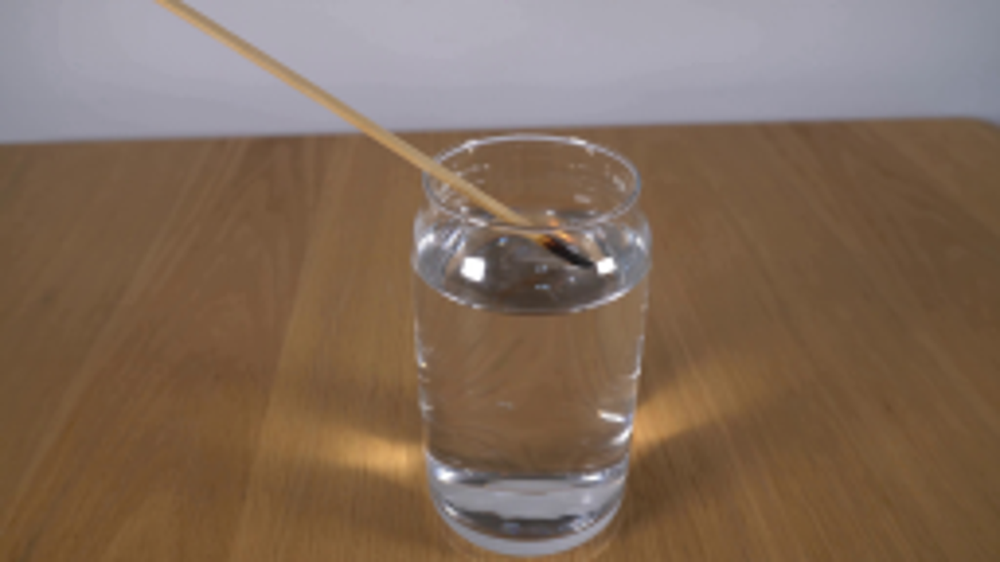
视觉工具实际返回图片 2
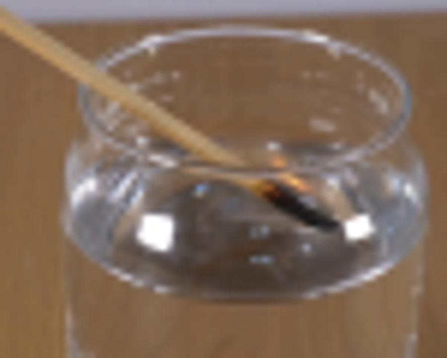
视觉工具实际返回图片 3
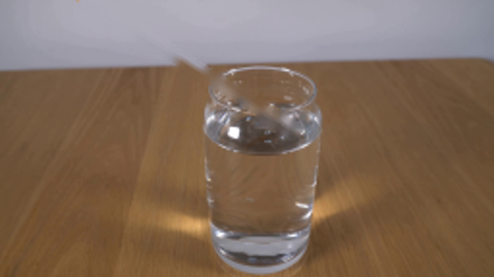
视觉工具实际返回图片 4
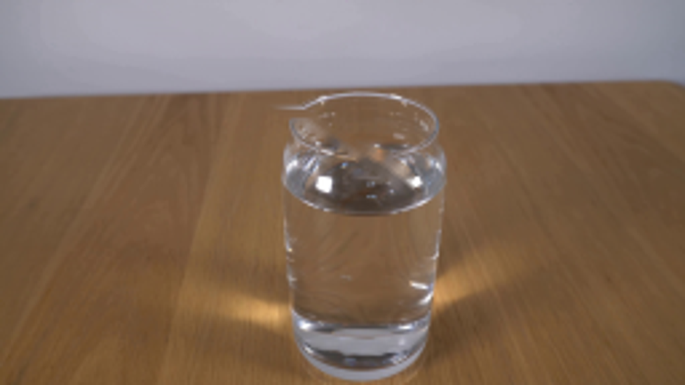
视觉工具实际返回图片 5
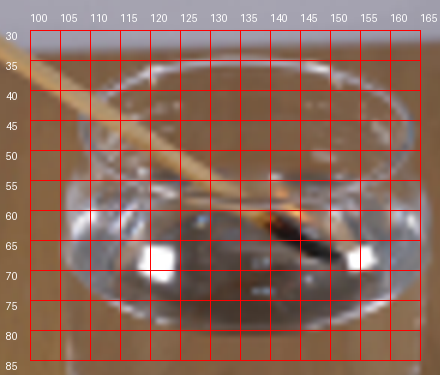
视觉工具实际返回图片 6
视觉工具实际返回图片 7
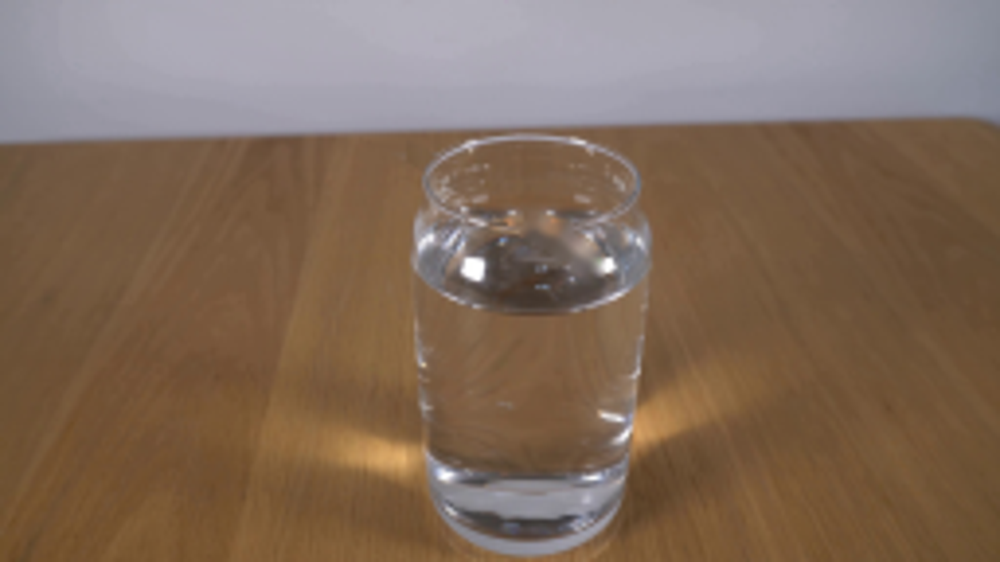
视觉工具实际返回图片 8

视觉工具实际返回图片 9
视觉工具实际返回图片 10
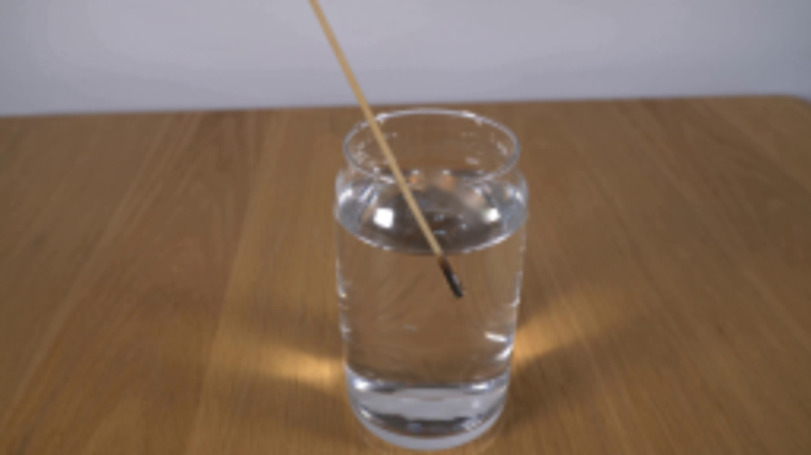
保存候选 2 份；完成命令 10 次；可验证图片返回 10 张。原始 API 响应与完整日志保留在本地。